Although it is possible to use other sizes, Swim likes the AA ones and says they are the easiest to work with. Be sure you get the lithium ones (hint: blue or red). |
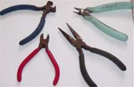
Now gather up some tools: |
|
Take your battery and break off the top: 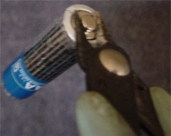
|
It should look like this: 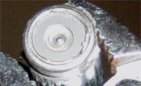
|
|
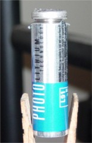
If you are just beginning, the best thing to do now is peel that sticky label off enough where you can see what you are doing. |
Now get something to grasp onto the "lip" and break it off. 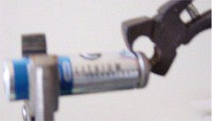
|
|
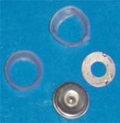
You should come up with 4 little pieces like these (2 silver, and 2 plastic rings) |
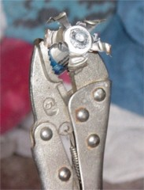
Being careful not to let any metal stay in contact (tools touching the silver parts or crimping some together), start taking sections of the casing and start pulling away. If the battery begins to heat up and you can't find where anything is in contact, throw it in your np so it won't ignite. |
|
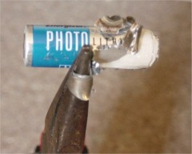
Take a pair of needle nose pliers and start rolling each section down like you were "peeling" a banana. |
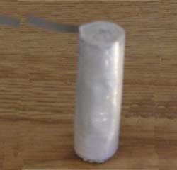
Keep doing this until you are able to completely remove the casing. On the side at the bottom there will be a silver strip. Completely remove it by getting a good grip and pulling it out. |
|
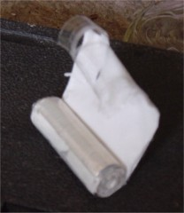
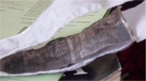
If you aren't going to use these right away, leave them like they are and store in some kind of NP solvent. Note by Rhodium:You absolutely must use an inert hydrocarbon solvent for the storage of Lithium! Using the wrong solvent (especially halogenated and protic solvents) can and will lead to fires and possible explosions. Safe solvents include dry toluene, xylene, pentane/hexane/heptane, as well as pure petroleum ether or naphta (if you are unsure about the purity, use something else!). If you are ready for them, then find the end of the wrapping and start to unroll. It might be like a roll of tape getting started and try to strip into sections so be sure and get it to where it unrolls even. When you get it unrolled you will have a black layer, 2 white ones with a dull silver one in between them. This is your lithium and will start to heat up as it is exposed to air. Make sure you use them immediately or put them in some solvent cause they will catch on fire! |
|